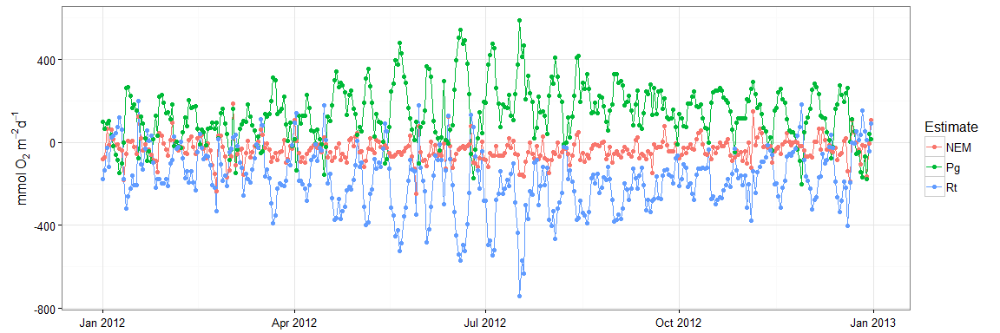
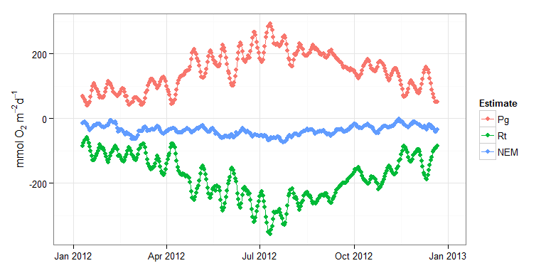

WtRegDO
Marcus W. Beck, beck.marcus@epa.gov
Linux: 
Windows:
This is the public repository of supplementary material to accompany the manuscript “Improving estimates of ecosystem metabolism by reducing effects of tidal advection on dissolved oxygen time series”, submitted to Limnology and Oceanography Methods. The package includes a sample dataset and functions to implement weighted regression on dissolved oxygen time series to reduce the effects of tidal advection. Functions are also available to estimate net ecosystem metabolism using the open-water method.
The development version of this package can be installed from Github:
install.packages('devtools')
library(devtools)
install_github('fawda123/WtRegDO')Citation
Please cite this package using the submitted manuscript.
Beck MW, Hagy III JD, Murrell MC. 2015 (in press). Improving estimates of ecosystem metabolism by reducing effects of tidal advection on dissolved oxygen time series. Limnology and Oceanography Methods. DOI: 10.1002/lom3.10062
Functions
Load the sample dataset and run weighted regression. See the function help files for details.
# load library and sample data
library(WtRegDO)
data(SAPDC)
# run weighted regression in parallel
# requires parallel backend
library(doParallel)
registerDoParallel(cores = 7)
# metadata for the location
tz <- 'America/Jamaica'
lat <- 31.39
long <- -89.28
# weighted regression
res <- wtreg(SAPDC, parallel = TRUE, wins = list(6, 1, NULL), progress = TRUE,
tz = tz, lat = lat, long = long)
# estimate ecosystem metabolism using observed DO time series
metab_obs <- ecometab(res, DO_var = 'DO_obs', tz = tz,
lat = lat, long = long)
# estimate ecosystem metabolism using detided DO time series
metab_dtd <- ecometab(res, DO_var = 'DO_nrm', tz = tz,
lat = lat, long = long)The metabolism results can be plotted by aggregation periods of the daily estimates or smoothed using a moving window filter.
data(SAPDC)
# metadata for the location
tz <- 'America/Jamaica'
lat <- 31.39
long <- -89.28
# estimate ecosystem metabolism using observed DO time series
met_ex <- ecometab(SAPDC, DO_var = 'DO_obs', tz = tz,
lat = lat, long = long)
# plot by monthly averages
plot(met_ex)
# plot after filtering with a centered 20 day moving average
plot(met_ex, by = 20)
License
This package is released in the public domain under the creative commons license CC0.